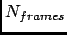

Next: Parameters
Up: Order Parameter (Contact Model)
Previous: Order Parameter (Contact Model)
Contents
Theory and implementation
This analysis is based on an analytical relationship for the estimation of the generalized order parameter
(see Section 4.2.7.1) of N-H vectors of the protein backbone. It related of the N-H vector of residue
i to close contact experienced by the H atom and the carbonyl oxygen of the preceeding residue i-1
with heavy atoms k using the formula:
where is the distance between the carbonyl oxygen of residue i-1 and heavy atom k and is
the distance between the amide proton of residue i and heavy atom k. The parameter b is set to -0.1 which takes into account that order
parameters of rigid protein regions typically lie around 0.9. The sum ranges over all heavy atoms k that do not belong to amino
acids i and i-1. For more details about this method, please refer to Ref. [73]
Beside the time-dependent defined in Eq; 4.199, nMOLDYN also provide a time-averaged defined as:
where  is the number of selected frames for the analysis.
Next: Parameters
Up: Order Parameter (Contact Model)
Previous: Order Parameter (Contact Model)
Contents
pellegrini eric
2009-10-06